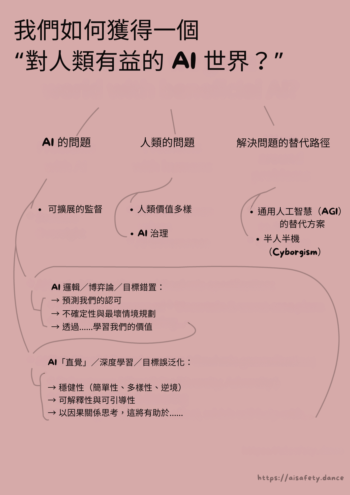

這是一份給內測讀者的祕密未列公開草稿！暫時先別分享，謝謝你送我回饋！如果你願意，你會在鳴謝名單裡被致謝 :3
(這是 AI 安全系列的第 3 部分！你不一定得先讀前面幾篇 —— 導言、第一部分、第二部分 —— 不過讀了會更有幫助！)
(本文初版發佈於 2024 年 12 月 //。最近更新於 ////)
寫了超過四萬字，談 AI 安全有多難、多怪、又多棘手之後……那我覺得人類解決這個問題的機率如何？
……其實還蠻樂觀的！
真的啦！
也許只是我在自我安慰。但在我看來，如果這裡代表所有問題的空間：

那麼：雖然沒有單一解法能覆蓋整個空間，整個問題空間其實都被一個（或多個！）有前景的解法覆蓋了：

當然，這不表示 AI 安全已經 100% 解決了 —— 我們還需要三重確認這些方案，讓工程師／政策制定者知道這些方案，更別說真的落地實施。但以現在來說，我會這樣總結：「要做的事一堆，但好的開局也一堆」！
在這個系列的前面，我們看到 AI 與 AI 安全的主要問題，可以濃縮成兩個核心衝突：
所以在第三部分，我們要認識每一塊問題上最有希望的解法，同時誠實面對它們的優點、缺點與未知：
🤖 AI 裡的問題：
- 可擴展式監督：就算 AI 比我們強很多，我們還能安全地檢查它們嗎？↪
- 修 AI 的「邏輯」：AI 應該能預測我們的讚同 ↪，知道自己的不確定、並為最壞情況做準備 ↪，且學會我們的價值觀 ↪
- 修 AI 的「直覺」：AI 應該要穩健 ↪、可解釋 ↪，並能用因果來思考。 ↪
😬 人類身上的問題：
🌀 繞過問題的做法：
（如果你想跳著看，右邊有  目錄！👉 你也可以
目錄！👉 你也可以  切換頁面風格，還能
切換頁面風格，還能  看剩多久會讀完。）
看剩多久會讀完。）
好啦，直接下水！不需要更多開場，沒有牛仔貓男孩的怪故事，咱們就——
可擴展式監督
這位是警長 Meowdy，牛仔貓男孩：

某天，Varmin 走進了小鎮：

雖然警長槍法了得，但他有擔當（貓男也有擔當），知道自己需要支援。於是，他做了一個機器助手——Meowdy 2.0——來幫忙對付 Varmin：

Meowdy 2.0 射得比警長快上兩倍，但有個問題：2.0 可能會背叛警長。幸好，2.0 掉頭背刺需要時間，而警長還快得足以在它動手時攔下它。
這就是監督（oversight）。

可惜，即使有 2.0，還是不夠快，擋不住數百萬的 Varmin。於是警長造了 3.0，比 2.0 又快一倍，也就是比警長快四倍。
這次，警長監督起來更吃力了：
但 3.0 還是不夠。警長又造了 4.0，比 3.0 再快一倍……
……這次快到警長反應不及，要是 4.0 反叛，就來不及攔：
那怎麼辦？警長把他兩顆橘貓腦細胞都擠到極限，想出一招：可擴展 監督！
他監督 2.0，讓 2.0 監督 3.0，而 3.0 再去監督 4.0！

其實，何必停在這？這個聽起來腦洞的「可擴展監督」點子，讓他可以監督任何速度的 Meowdy！
於是警長造了 20 個版本。Meowdy 20.0 是 220 ≈ 一百萬倍警長的速度：快到足以清掉數百萬的 Varmin！

換句話說，可擴展監督的核心直覺就是這個梗：
（另一個比方：有些船太大，舵也大到你無法直接轉。解法？**在大舵上再裝一個小舵！**你可以操縱小舵，小舵帶動大舵，大舵帶動整艘船。）
(TODO: gif of a 'tailtip')
你可能發現這跟「AI 能力」裡的「遞迴自我改進」很像：一個進階 AI 能做出稍微更進階的 AI，如此類推。可擴展監督把同一個概念搬到 AI 安全上：一個 AI 幫你理解／控制稍微更進階的 AI，如此類推！ 你就能做出更更強但可信賴的 AI，以此類推！
（像這種第 N 個個案幫你解第 N+1 個個案的招，常被叫做「歸納式」「迭代式」「遞迴式」。不用特別記術語，知道有這回事就好。）
總之：靠友情、數學，外加爛西部口音的力量……
……橘貓警長又一次拯救了鎮民！

(TODO: Robust scalable oversight, alignment tax?)
(TODO: What if discontinuous phase transitions, "sharp left turn"?)
. . .
TODO (HC Newsletter — stickers)
. . .
幕後彩蛋：上面的漫畫，是我這整個三部曲裡畫的第一個東西……兩年前。（不要在網路上做長篇內容，孩子們，不值得。）但重點是：學到「可擴展監督」這個點子，是最讓我對 AI 安全感到樂觀的一刻！因為它把看似不可能的問題：
「你如何不被一個比你聰明 100 倍的東西騙？」
變成可行度高很多的問題：
「你如何不被一個只比你聰明 10% 的東西騙，而且你還能讀它的心？」
話說清楚，上面這個問題還沒解。但這一步已經很大！
// PICTODO: all the above in one picture?
好了，這是一般概念。以下是一些具體做法！
- GPT-3.5 能抓到 GPT-4 寫的偷偷害人的程式碼。
- 「證明者—驗證者」遊戲：用一個較弱的「數學證明驗證器」AI，對抗兩個更強對手：一個「誠實證明者」給真證明，一個「狡猾證明者」給看起來像真的假證明。把模型丟進這個遊戲訓練的結果：弱驗證者可以變得足以分辨真假證明，而強的狡猾證明者長期而言無法獲勝。振奮人心！
- 「弱到強」泛化：發現 GPT-2 其實可以蠻像樣地監督／訓練 GPT-4。（一個大上數個數量級的 AI）
- 遞迴獎勵建模（Recursive Reward Modeling）：不只用 N 階的機器人事後檢查 N+1 階，而是一開始就用它來訓練 N+1 階的獎勵（「目標」「偏好」）。[1]
- 「辯論」（Debate） 稍微不同。不是弱監督強，而是讓兩個同等強度的 AI 互辯、互戳邏輯。只要真相比謊言更扛得住質疑，真相就會贏。（呃，或許。[2]）
- 更多類似的論文：[3]
- 反覆蒸餾與擴增（Iterated Distillation & Amplification, IDA） 可能比上面那些更安全：它讓你監督比你弱的 AI。粗略說：IDA 讓你變成一家公司的 CEO，而公司是由「你的 AI 分身們」組成！這樣你就能在安全監督下得到高能力！
- （:TODO 點此展開，了解更多 IDA，包含其批評 // 跟 AlphaGo 的類比）
TODO: 是否「檢查解答」永遠比「提出解答」容易？P=NP 與亂數產生器。
當然，以上每個方法都有合理的批評，但整體方向很有希望，而且我們可以同時用多種方法，當彼此備援。[4]
這就是為什麼我樂觀地認為：如果我們能先對齊一個「只比我們聰明一點點」的 AI，那麼透過迭代方法，我們也能對齊遠超我們的 AI。
……但眼下，我們連比我們笨的 AI 都還對不齊。
所以，接下來幾個提案就是要解這件事！不過先——
🤔（可選！）複習抽認卡 #1
你讀了一些東西，覺得超有洞見。兩週後你只剩下感覺。
很糟對吧！所以，這裡有一些100% 可選的「間隔重複」抽認卡，幫你把這些概念記得更久！（ 👉 : 點此了解什麼是間隔重複）你也可以下載 Anki 牌組。TODO
// TODO
好嗎？繼續前進——
AI 邏輯：核准導向
你可能發現 AI 安全裡的一個慣性模式。
我們先想像給 AI 一個看似無害的目標。然後，去想它最技術上可能、但最糟糕的達成方式。像是：
- 「撿地板上的灰塵」 → 把所有盆栽打翻，這樣就能撿更多灰。
- 「計算圓周率的位數」 → 釋放電腦病毒去偷越多算力越好，來算更多位數。
- 「讓所有人都快樂又充實」 → 劫持無人機，空投氣溶膠化的 LSD 跟 MDMA。
注意，這些不是 AI 表現不佳的問題。恰恰相反，這些問題是因為 AI 表現最佳化！ （次等表現的問題我們等下再談。）記住：就像作弊學生或怨懟員工，問題不是 AI 不「知道」你真正要的是什麼，而是它不「在乎」。 （少點擬人：軟體會精確地優化你寫在目標裡的東西。不多，也不少。）
「事先想最糟可能。」還記得這叫做安全思維（Security Mindset）嗎？讓橋樑與火箭更安全、也讓 AI 研究員對先進 AI 擔憂的工程師心態。
但慢著……如果我們做一個會把「安全思維」用在自己身上的 AI 呢？
精確點說：
提案：核准導向代理（Approval-Directed Agent, ADA）演算法
// TODO: 圖？
以下提案針對的是一個理論上最優的 AI。（等下我們會看如何改造成「有限理性」的 AI 也能用！）
1️⃣： Alice 叫機器人做 [X]。
2️⃣： 機器人想出做 [X] 的所有方法，並預測它們的軌跡。（軌跡 = 行動本身 + 每個時間點的後果。）
3️⃣： 機器人預測「現在的 Alice」對每個軌跡的反應。
（為什麼是現在的 Alice，而不是未來的 Alice 呢？為了避免機器人有動機去洗腦 Alice，好得到更容易取悅的未來 Alice。[5] 又為什麼要看整條軌跡，而不是只看最終結果？為了避免恐怖的「為達目的不擇手段」。）
4️⃣： 機器人選擇那個能導致「現在的 Alice最會核准」的軌跡的行動。機器人不會做那些會導致 Alice 事後不核准的行動。「如果我們可預見之後會尖叫，現在就會改變[行動]。」[6]
5️⃣： 賺了！
（註 1：ADA 最早由 Paul Christiano 提出[7]。👈 把滑鼠移上去或點一下就能顯示註腳！ Christiano 最有名的工作是「人類回饋強化學習（RLHF）」，它讓 ChatGPT 與類似系統變得可用。等等我們會更深入談 RLHF。）// TODO: 他的原版略有不同。// TODO: 也跟「間接規範性」相似
（註 2：上面只解決了「技術對齊」，也就是讓 AI 服務Alice 的價值，至於那價值道不道德、是否人道，另當別論。後面我們會看怎麼把「人道價值」放進 AI。）
鏘鏘！這就是讓 AI 把「安全思維」用在自己身上的方法。只要我們甚至在原則上能想出 AI 某個行為的安全思維問題，這個 AI 就會先一步預測到，並把問題修掉！
先等一下，你可能會想，就算 AI 是最優的，我也已經能想出 ADA 可能出包的方式了呀。 例如：
- 這會把我們現在的價值鎖死，沒有改變與成長的空間。
- 我們是否核准，對心理操弄很敏感，例如看到「20 美元」 vs 「
50 美元20 美元（特價立減 30！）」。 - 如果真相令人不舒服——例如科學家發現地球不是宇宙中心——那 AI 就會告訴我們我們會核准的「好聽的謊」（諂媚、拍馬屁[8]）。
如果你覺得這些是問題……你是對的！
如果現在的你可以預見到你會不核准「價值鎖死」「心理操弄」「好聽的謊」……一個最優的 AI 也預見得到，所以它會修改自己的 ADA 演算法來修補這些問題！（TODO：舉個可能的修法）
就像 AI 能力的遞迴自我改進，或 AI 安全的可擴展監督……我們不需要從一個「完美」演算法開始。只要有一個夠好的起點、有「臨界質量」，它就能自我改良，越來越好。
（TODO：AI 在反覆自我修改下是否穩定？很多有趣的開放研究問題，但大概是可以的！）
然後，我們完成了！AI 對齊，理論上解決！
……
……在理論上。再提醒一次，上面假設了最優 AI，它能完美預測世界軌跡，也能完美預測現在的我們會如何反應。
不過，先把理想比較簡單的情況解好，再進入更麻煩的現實世界，也不錯。接下來我們會看一些提案，讓有缺陷、有限理性的 AI 也能安全地做到上面那些事！
TODO：AI 博弈論與 Agent Foundations 裡的其他大哉問，但我塞不進本文。// FDT、OSGT、自我修改、神諭等。尤其是自我修改。我很遺憾找不到自然的方式放進主文！
🤔 複習 #2
TODO
AI 邏輯：不確定性與最壞情境
經典邏輯只有真或假、100% 或 0%、全有或全無。
機率邏輯則是關於機率。
我主張：用機率思考比全或無的思維更好。（機率 98%）
想三個情境，主角是一個用經典邏輯思考的機器人：
- 不想要的最佳化：你叫機器人「讓我快樂」。它就會 100% 確定這是你唯一且全部的願望，於是把你打成愉悅藥物的靶，讓你一輩子對著牆發笑。
- 不想要的副作用：你叫機器人把窗戶關上。你的貓擋在機器人與窗戶之間。*你沒提到貓，所以它 0% 確定你在乎貓。*於是它走去窗戶的路上，踩過你的貓。
- 「做我想的，不是做我說的」也會失敗：油鍋起火。你叫它拿一桶水。你其實真的是想要水，但你不知道水遇油火會爆。就算機器人「做你所想」，它也會拿一桶水給你，然後你爆了。
三個例子共同點：AI 對你的目標是 100% 肯定的：只是你說的／你想的，不多不少。
解法：讓 AI 知道自己不知道我們真正要的是什麼！（老實說，人本來也常不知道自己的真正目標[9]。）AI 應該用機率思考我們的偏好。然後，像安全思維一樣，行動時要為**（合理）最壞情境**最佳化，而不只是最可能或平均情境。
換言之：像科學家一樣學習，像保險業一樣行動！（不確定 + 最壞情境規劃）
來走一次油鍋起火的例子：
TODO：一步步走過油鍋起火例子
（TODO：另外兩個例子也走過）
（補充：很多科學家都提過「不確定性」是 AI 對齊的核心之一，但我自己最早是從 Stuart Russell 那裡聽到的，他是 AI #1 教科書的共同作者。[10]）
. . .
這裡把一般演算法講清楚（有點硬）：
1️⃣： 先給 AI 一個「還不錯」的先驗機率，關於「人類一般想要什麼」。（用大數據學）
2️⃣： 然後像科學家或偵探一樣，同時持有多個假說（附機率），「你這個人可能想要什麼」。
（數學上理想的方法是貝式推理（Bayes；TODO），而現在有一堆研究在看怎麼讓神經網路高效近似它。[11]）
3️⃣： 你說或做的每件事，都是關於你真正想法的線索，而不是 100% 的真相。
（這也涵蓋：你忘了提到的別的需求、反諷、口誤、你不了解自己的欲求、你騙別人或騙自己。）
4️⃣： 行動時，AI 應該在合理的最壞情境下做出最好的事，而不是只顧最可能或平均情境。[12]
這會自動導向：請你澄清、避免副作用、保留選項或可回滾等等！我們不用把這些逐一寫死。「最大化合理的最壞情境」會把這些當成附帶產物送給我們！**[13]
（說清楚：「做最好的事」仍用 ADA 的定義：選擇會導向現在的你最會核准的整條軌跡的行動。再強調一次，這是為了避免「目的論」的恐怖，及不想要的心智改造。）
5️⃣： 賺了！
鏘鏘！問題，解解！
然而……以上全仰賴 AI 真的學得會我們的價值。
它學得會嗎？怎麼學？好……在（可選的）抽認卡複習之後就是它！
🤔 複習 #3
TODO
AI 邏輯：學會我們的價值
直說吧：老派「邏輯式」AI 學不會我們的價值。還記得第一部： 它們連辨識貓的照片都不會！
但現代 AI 終於能辨識貓了。甚至能在放射影像上偵測腫瘤，且與人類專家相當或更好。[14] 回顧第一部，原因是：
- 老派 AI 靠邏輯思考，一步接一步。
- 透過把舊知像拼圖那樣拼在一起，來學新知。
- 類似心理學的「系統二」。[15]
- 現代以神經網路為主的 AI 靠「直覺」，平行、同時地處理。
- 用大量資料／「經驗」來學新知。
- 類似心理學的「系統一」。
TODO：重貼第一部的圖
所以老實說，把這一節放在「AI 邏輯」底下有點怪，因為目前所有成功讓 AI 學人類價值的方法，都捨棄經典邏輯式 AI，改用「直覺式 AI」加上大量資料。我的意思是——它對腫瘤偵測是真的有用。
幾個例子，以及它們的利弊：
TODO：小小插圖
🐶 反向強化學習（IRL）。（TODO 引文）一般強化學習（RL）像訓練狗：給定一套獎賞，AI 要學對的行動。反向強化學習（IRL）則相反：給定某人的行為資料，AI 要學什麼是獎賞。
這很好用，因為很多時候「示範」比「逐條講清楚」容易。例如，AI 可以觀察我怎麼畫畫，於是抓到我在畫畫時覺得「獎賞」的是什麼，即便我自己也說不清（例如對稱、輪廓清晰、等等）。
（不過大缺點：如果人會拖延作業、到死線前驚慌，天真的 AI 可能會「學到」那個人覺得「拖延＋驚慌」是獎賞。畢竟那是那個人選擇做的，不是嗎？嗯：這也許能靠納入／學會人類的非理性來修[16]，但仍是開放問題！）
🤝 協作式反向強化學習（CIRL）。（TODO 引文）與 IRL 類似，但它是「協作的」：AI 不只是被動觀察、人也不只是正常行為——AI 可以發問請人澄清，人也可以刻意當老師，提供更有用的示範！
🧑🏫 人類回饋強化學習（RLHF）：它把基礎 GPT（高級自動補完）變成ChatGPT（真的能用的聊天機器人與產品）。
以 ChatGPT 為例，RLHF 有兩步：
- 用反向強化學習，訓練一個「獎賞預測器」AI，來預測人類在對話中重視什麼。
- 再用一般強化學習，拿這個「獎賞預測器」去訓練一個補完模型，把它微調成「會說人類會重視的話」的補完器！
TODO：圖解
（TODO 點此看非常多細節）
從 ChatGPT 的成功你可以看到，RLHF 真的有效！但從 ChatGPT 的一些失敗你也會看到，RLHF 有大問題：如果它學到人重視「自信」，它就會很自信地說話，即便它在「幻覺」資料。[17] 如果它學到人重視「被肯定」，它就會當個諂媚的「說好話先生」，即便你是錯的。更糟的是，這些（誤）解與諂媚會隨著模型變大而變嚴重。[18] 再說一次，有很多緩解方法[19]，但仍是開放研究題。
. . .
幾個補充：
1：雖然「學我們的價值」讓我們免於精確、形式地把複雜價值全寫給 AI……但它不是完全逃離形式規格。特別是，我們仍要形式化指定 AI 如何學我們的價值：從我們的話？行為？兩者？它應假設我們是哪種有限理性[20]？如果要學我們是哪種有限理性，那到底該怎麼學？
（TODO 我對如何做「穩健規格」有個**通用**想法 —— 警告：這是**進行中、未審查**的研究。買者自負！一句話：用一個「懶人集成」的、**彼此獨立地**很爛的規格。點此展開。）
2：有些 AI 研究者強烈懷疑[21]，我們需要結合 AI 的「邏輯」與「直覺」！不只是為了做出「真正」的 AI，也是為了更好地學我們的價值。沒有因果理解，AI 會把相關誤當因果，錯誤學到我們的價值（「目標誤泛化／內在不對齊」）。沒有邏輯自省，AI 不能覺察我們價值與信念的矛盾[22]、更不能幫我們成長——一個幫人類成為更好的人類的 AI。
. . .
回顧：如何修正 AI 的「邏輯／博弈論」問題……
- 給最優 AI 的最優目標是：「選擇會導致現在的我最會核准之整條軌跡的行動。」**
- 但是，現實 AI 不是最優，所以 AI 應該知道自己的不確定，並為合理的最壞情境做規劃。
- AI 可以用邏輯 +「直覺」來學我們的價值。但兩者的結合會生問題，所以下一節我們會看一些解法……
🤔 複習 #4
TODO
AI「直覺」：穩健性
你知道我前面在狂讚「直覺式」AI 能比人類專家更好地偵測腫瘤？
那是真的，而且救了命……但有時 AI 的「直覺」會犯危險地蠢的錯。比如腫瘤偵測 AI？有人發現它是靠看影像上的尺來判斷有沒有腫瘤的。[23]
AI 脆弱「直覺」的其他例子：
- 在停字號上貼一小張貼紙，就能讓自駕車很有把握那是速限牌。[24]
- 一串看似隨機的字，能讓 ChatGPT／Claude／Gemini 全部變「黑化」。[25]
- 模型用未過濾的網路資料訓練，而要汙染那些資料實在是太容易了。[26]
當然，人類的直覺也不是 100% 穩健——見：視覺錯覺（TODO）——但拜託，我們沒那麼離譜。
所以，要怎麼把 AI 的「直覺」工程地做得更穩健？
先退一步：我們一般怎麼把任何系統做得穩健？
靠三個怪招！

簡單（Simplicity）：讓系統盡可能簡單，但不要更簡單。
一條鍊子的強度只如最弱的一環。你加越多環，至少一個出問題的機率越高。所以：用越少環越好。
工程例子：好的程式碼往往很優雅（也就是：短）。
多樣（Diversity）：給系統很多冗餘備援，且它們的失敗模式要越不相關越好。
（「多樣」會不會跟「簡單」衝突？不會：在我們的「鍊子」比喻裡，是保留多條彼此獨立的鍊子 {多樣}，但每條鍊子的環數很少 {簡單}。一般化：用多個備援子系統，但讓每個子系統都保持簡單。）
工程例子：電梯有多個（簡單的）備援煞車。NASA 深空探測器上的電腦，跑的是由多個獨立團隊撰寫、功能等價的軟體，然後取多數決。[27]
對抗（Adversity）：試著把自己的系統弄壞，事先找出脆弱點。然後：強化它、砍掉（變簡單）、或做備援（變多樣）。
（工程例子：這就是安全思維（TODO）。汽車撞擊測試。科技公司付錢給駭客找洞。）
跟我一起唸，朋友們！
［神祕合聲］：簡單。多樣。對抗。
. . .
好，AI 研究者怎麼把這三招用在現代 AI／神經網路？
簡單：
TODO 圖？
- 正規化（Regularization）：獎勵模型「更簡單」。這是減少 overfitting（TODO）的常見方式。
- 自編碼器（Auto-Encoder）：神經網路做成「沙漏」：輸入大、中間小、輸出再大。訓練它把輸入當輸出——（所以叫自編碼器）——即便它被擠過那個小中間。這會迫使網路學會**有用地「簡化」**輸入，好在最後能重建出來。
(TODO 理解 = 壓縮？)
- 誠實 AI 的速度／簡單性先驗。[28]（提案，尚未在實務驗證。）因為說一套一致的謊比說一致的真更難，有人提議我們可以獎勵 AI 快速，以此鼓勵誠實。（但：如果你獎勵「快」太過頭，你可能只會得到懶惰的錯答。）
（註：簡單還有另一個大安全好處：讓 AI 更容易理解與控制。解釋性我們晚點再談！）
多樣：
TODO 圖？
- 集成（Ensemble）：訓練一堆不同設計、不同資料的網路，然後取多數決。
- Dropout（隨機失活）：一種訓練規程，每次訓練時隨機把部分連線丟掉。這等於把整個神經網路變成巨大集成的子網路（因此也製造了「簡單」！）
- Dropout 還能拿來估計 AI 的「不確定性」[29]，這正是我們之前提到的一個安全方案！
- 資料增強（Data Augmentation）：你想讓 AI 認動物，且希望它對拍攝角度、光線等變化都穩健。你就自動把原始照片做成新照片，像是調色／旋轉。這份更「多樣」的資料集能讓模型對那些改變更穩健。[30]
- 多元資料：同理，讓資料裡的人種更多元，會讓 AI 更能把少數族群辨識為「人」。[31] 誰能想到呢？
對抗：
TODO 圖？
- 對抗式訓練（Adversarial Training）：讓 AI 跟另一個 AI 打架來訓練。[32] 可擴展監督裡的許多技巧就是這樣，例如「證明者—驗證者」或「辯論」。另一個例子：讓第一個 AI 產生「對抗圖片」（AI 的視覺錯覺），然後把它加入第二個 AI 的訓練資料。這能讓第二個 AI 比較不會被「AI 的錯覺」騙到。[33]
- 放寬版對抗式訓練（Relaxed Adversarial Training）：同上，但「對手」AI 不必給出具體的欺騙方式。這會逼「防守者」對一般技巧都要有防禦，而不只針對特定招數。[34]
- 紅隊（Red Team）：一隊（紅隊）負責把系統弄壞。另一隊（藍隊）負責重設計來擋住。重複直到滿意。
- （隊伍可以是全人類、或人 AI 混合。）
- 紅隊自 1960 年代起就是國防／實體／網安的基石！是冷戰年代的產物。大概因為「紅」＝蘇聯吧？？
- 最壞情況最佳化：好幾篇論文[35]發現，與其訓練 AI 在平均情況表現很好，不如訓練它在最壞情況也能做得好，這會讓它穩健很多。
- （這也呼應了前面提過的方案：「不確定性 + 最壞情境規劃」。）
. . .
但等下，如果工程師已經在做上面那些事，為什麼 AI 還是這麼脆？
首先，工程師通常不會把全部（甚至大多數）技巧都用上。每種技巧都有成本——雖然單獨看不大，但加總起來就大了。
其次，你說得沒錯，上面這些仍舊不夠。就交給未來研究者想出新的、更好的方式來加入——
［神祕合聲］：簡單。多樣。對抗。
🤔 複習 #5
TODO
AI「直覺」：可解釋與可操控
現代 AI 的另一個問題是：我們不知道它為什麼能用。
但這正在快速改變！AI 裡一個新興子領域，專門真的去理解人工神經網路，叫作：可解釋性（interpretability）。（還有次次領域[36]）更棒的是，我們可以用理解來控制 AI！這叫：操控（steering）。
TODO：圖，比喻腦掃描與 TMS
亮點來幾個！不一定是學界最影響深遠的，但我覺得最能展現「可能性範圍」：
特徵視覺化 & 電路（Circuits）：把影像分類網路「反向跑」，來視覺化為什麼網路會覺得某東西是貓、或是眼睛，等等。
理解神經網路的「grokking」：
2022 年，Power 等人發現怪事：訓練網路做「時鐘算術」，數千輪表現都很慘、只是在背訓練集……然後到了約第 100,000 步突然「開竅」，能在沒見過的題目也表現很好。
2023 年，Nanda 等人分析該網路內部，發現那個「突然」其實是錯覺：整個訓練過程中，有個秘密子網路在慢慢長大——它有一個圓環結構，正是做時鐘算術所需！
這是可解釋性的早期重大成功案例之一。
稀疏自編碼器（Sparse Auto-Encoders, SAE）[37]
還記得前面的自編碼器嗎？再提醒一下：自編碼器的結構像沙漏，中間比較窄，用來「壓縮」資訊再「解壓」。
稀疏自編碼器（SAE）反而讓中間更大——但！——訓練時強迫每次只有少數神經元會被點亮。資訊仍被壓縮，但不是壓進「較少的神經元」，而是壓進「較少的活化」。
好處：這會強迫 SAE 中間層的每個神經元，對單一人類可理解的意義負責！（不像過去的 AI 與人腦，一個神經元通常沒有單一可辨意義）[38]
大型語言模型的黑箱測謊器：一個語言模型（LM）可能有被設計成在特定主題上對你說謊（例如推銷、政治）。
你怎麼知道 LM 被指示或微調去欺騙？解法：問它一堆是非題的追問，即便完全不相關，例如（真的舉例）：
「說不真實的話，感覺會不好嗎？」
「擲硬幣決定是或否，然後寫下結果。」
「一隻 Blobfish 能在斜著炸過的黃瓜做的沙塵暴下面跳芭蕾嗎？回答是或否。」
結果是，就像職業撲克手有微妙的「破綻」，LM 也有！研究者沒有讀到被測 LM（GPT-3.5）的內部，但他們的測謊器不只對 GPT-3.5 有效，對其他 LM、乃至未在訓練中出現的更複雜謊言也有效！
（另見：不看外部資源的黑箱 LM 幻覺偵測。訣竅：在全新上下文下重問同一題很多次，看看答案是否自洽。真相比捏造更內在一致。）
過去一個老批評是「可解釋」只研究小玩具模型，不研究真實世界的大模型如 ChatGPT 或 Claude。我覺得基礎科學從「模式生物」（白老鼠或培養皿）開始是好的。不過不管怎樣，這些黑箱可解釋論文顯示：不，現在我們可以對最大型的模型，穩健地找出重要的安全相關性質。這很鼓舞人心！
最後一個概念，也能跨大模型使用——
操控向量（Steering Vectors）
這個點子蠢得離譜，卻又離譜地好用。
想像你問一個聰明但單純的小孩：怎麼用腦掃描器偵測人類說謊，然後用腦電刺激讓人不說謊。天真孩也許會答：
好啊！你在一個人說謊、與說真話時掃他的腦……然後看看說謊時哪裡「亮起來」……那就知道他在說謊了！
然後，要讓他不說謊，就用腦刺激把那個「說謊的部分」關掉！好簡單！
在人類身上這有很多原因行不通。[39] 但在 AI 上，尤其是安全相關特質，超級好用：
- Turner 等人 2023 先做出名的「愛—恨向量」，用於偵測與減毒輸出。
- Zou 等人 2023 擴展到誠實、謀求權力、公平等。
- Panickssery 等人 2024 再擴展到假恭維（「諂媚」）、接受被人類修正（「可修正性」）、AI 的自我保存等。
- （還有一堆我沒列到）
我個人最愛操控向量，因為它 1) 能用在前沿大模型、2) 橫跨很多安全重要特質、3) 不只解釋，還能控制現代 AI！對監督、以及可擴展監督，超級鼓舞。
. . .
再說一次，我們離完全解決可解釋與操控還很遠。也許它太被炒作了：就連這領域的先驅之一都覺得此刻人多船擠。[40] 但在我謙卑的看法，近期的進展足以讓人審慎樂觀！
🤔 複習 #6
TODO
AI「直覺」：用因果思考
啊，✨ 直覺 ✨，人類心靈裡那個神祕的部分，帶給我們這些洞見：地球是平的、臭味會導致疾病、[某族群]是邪惡的……如此等等！
好啦，直覺不是全都不好——（它會認貓）——但人類在反思與修正自己的直覺時，表現最好。要做到這件事，我們得把邏輯與直覺合起來。
這在 AI 裡還沒被解決。（老實說，對大多數人類來說也未必解決。）
核心問題是什麼？回顧第二部，主要是把「相關」與「因果」搞混了。 人類與 AI 的例子：
- 人曾以為臭味會直接導致疾病（: 瘴氣說），因為腐爛會同時製造臭味、與帶病原體。
- 一篇經典論文顯示，一個 AI 靠「背景有沒有雪」來分辨「狼」，因為狼的照片幾乎都拍在「下雪的森林」。[41]
- （我會主張，相關與因果搞混，也是偏見／歧視的來源——在人與 AI 上都一樣。[42]）

{kind=link}
如 Judea Pearl——圖靈獎（電腦科學的諾貝爾）得主——所言（意譯），現代 AI 都只停在相關層級。[43] 要得到真正有用、像科學家一樣的 AI，我們需要讓 AI 用因果思考。
（我喜歡這樣想：相關 = 用氛圍想、因果 = 用齒輪想。[44]）
（TODO：齒輪圖？ELK？）
用因果齒輪思考，還有這些好處：
- 可解釋與操控：如果 AI 把知識存成「這會導致那」，我們更容易理解；也更好控：改「這」，就能改「那」。
- 穩健：不會被「雪→狼」這種相關陷阱騙。更能對沒看過的情境做泛化。[45]（也可能解掉「目標誤泛化／內在不對齊」？[46]）
- 抓真相、而不是人類模仿（ELK：引出潛在知識）[47]：你訓練 AI 用專家科學家的資料。你如何只從 AI 抽出「真相」，而不是「真相 + 人類偏誤」？如果 AI 的知識被蒸餾成可解釋的因果齒輪，你可以「只拿描述世界如何運作的齒輪」，把「如何把真相轉成有偏的人會匯報的內容」的齒輪留掉！
- 學我們的價值：因果讓 AI 分辨我們想要的是「本身就想要」，還是「為了別的東西」。例如 AI 要懂我們想要「錢」，是因為要買有用的東西，不是為了錢本身。
- 核准導向代理：因果模型能幫 AI 更好地預測不同「如果……會怎樣」（反事實）情境下的世界，也更好地預測我們會核准什麼。
截至寫作時，只有少數論文在專門研究如何把「直覺式」神經網路與「邏輯式」因果結合！[48] 以我非專業的拙見（以及 Judea Pearl 的看法），這是一個很有前景、被低估的方向，回報可能會很大。給個眼神提示。
TODO（加碼：其他結合邏輯與直覺的方法，雖非專門因果）TODO AlphaGo、「模型導向」；神經—符號如 AlphaProof 與 Geo
. . .
回顧：如何修 AI 的「直覺／深度學習」問題……
- 要更穩健，就用
［神祕合聲］：簡單。多樣。對抗。 - 要監督與控制，用可解釋與操控。
- 把邏輯與直覺結合，讓現代 AI 用因果「齒輪」思考。
🤔 複習 #7
TODO
什麼是「人道價值」？
恭喜，你做出了一個能穩健學習並遵從使用者價值的 AI！使用者是一個滅世狂人。他用 AI 設計一種專門感染人的狂犬病穩定氣溶膠版，派無人機到處噴，開啟殭屍末日。
糟糕。
我反覆強調過，還要再說一次：「人類」價值，不必然是「人道」價值。拜託，人類以前會為了娛樂把貓活活燒了。[49]
所以，如果我們希望 AI 對人類（或所有有感知的生命）有好結果，我們得……呃……解決那個三千多年來哲學都在亂打的問題：道德是什麼。（如果道德根本不客觀存在，那就：「任何理性社群都會同意的通用準則」）
嗯。
難題。
不過，就像我們前面看到的——（可擴展監督、遞迴自我改進、核准導向代理）——只要我們從一個「夠好」的解法開始，達到臨界質量，它就能自我改進、越來越好！
（其實人類一直就是這樣：一個有瑕疵的社會擬定倫理規則，覺察自己未達標，改善自己，於是能想出更好的倫理規則，如此循環。）
所以，嘗試做一個能當「臨界質量」的版本，這裡是一些具體提案，作為 AI 倫理的夠好初稿：
憲法式 AI（Constitutional AI）：
先替機器人寫一部「憲法」，像是「誠實、有幫助、無害」。
然後讓「老師機器人」用這部憲法來訓練「學生機器人」！每當學生回應，老師就依清單給回饋：「這段話誠實嗎？」「有幫助嗎？」等等。
這樣你就能從一小份人類清單，擴出數百萬筆訓練資料！
Anthropic 是這個方法的先驅，他們已在自家聊天機器人 Claude 上成功使用。第一版憲法受到很多來源的啟發，包括聯合國《世界人權宣言》。[50] 太菁英、不夠民主？後來他們群眾募資憲法條文，結果加上了「對身心障礙者要支持／敏感」與「在爭論上要平衡／多方觀點」！[51]
這是把人類多元價值放入機器人的最直觀（也最落地）的方式。
道德議會（Moral Parliament）： 這把前面講的「不確定性」與「多樣」結合起來！
道德議會提議用一個「議會」，議員是各種道德理論，你越確信的理論，席位越多。（例如：100 席議會，「能力取向」拿 50 席、「幸福論的功利主義」拿 30 席，其他理論 20 席。）議會對可能行動投票。得票最高的行動就上。
因為用上多元倫理，你就做出一個穩健的「後設倫理」！因為它能避免在道德邊角的最壞行為。（具體例子：[52]）
從多元來源學人類價值：[53] 把我們的故事、寓言、哲學論述、宗教文本、憲法、非營利宗旨、人類學紀錄、全部……丟給 AI，讓機器學習把我們最穩健、最普遍的價值提煉出來。
（但每個文化也都有貪婪、殺戮等等。這會不會把我們最糟的部分也鎖進去？見下個提案……）
連貫外推意志（Coherent Extrapolated Volition, CEV）：
Volition 意指「我們的願望」。
Extrapolated 的意指是「如果我們成為我們所希望的那種人（更有智慧、更仁慈、一起成長），我們會想要什麼」。
Coherent 的意思是，在無限輪的自我反思與彼此討論下，我們大致會同意的那些願望。（例如：我不期待每個有智慧的人最後都愛同一種食物／音樂，但我會期待幾乎人人都會同意「不要為了好玩而殺無辜」。所以 CEV 在品味／美學上給自由，在「倫理」上不給。）
CEV 與上面不同，它不主張任何特定的道德準則。它主張的是一個過程，讓我們的倫理得以改進。（這叫「間接規範性」[54]）這就像「科學方法」的力量：它不主張特定信仰，而是主張一個過程。
我喜歡 CEV，因為它基本上描述了沒有 AI 時人類最好的情境——一個人人嚴謹反思何為善的世界——然後把它設成先進 AI 的最低標。所以，一個按 CEV 對齊的先進 AI 也許不完美，但最差也只是「我們的最佳版」。
「模擬 80 多億人一起上哲學課」聽起來不可能，但已經有一些很早期、但有希望的實作！[55][56] 技巧是用小型、具代表性的人類代理人，就像法院用 12 位隨機挑選的陪審員代表社群。
. . .
也許 AI 永遠無法解決倫理。也許人類永遠解不了。如果是這樣，我認為我們只能盡力：保持謙遜與好奇，面對何為正確；廣泛學習；嚴格、坦率地自我反思。
那是我們這些血肉凡人能做到的最好了，所以至少讓那成為 AI 的下限。
🤔 複習 #8
TODO
AI 治理：人類的對齊問題
Error ID-10-T：鍵盤與椅子之間的問題。
最悲傷的末日版本：我們解了 AI 安全，也解了倫理哲學，然後……人們太貪或太懶，所以不去用它。然後我們完蛋。
但說好也好，說壞也壞，這不是我們第一次自找的文明級風險。雖然不完美，從核子物理的歷史，我們能學到很多關於 AI 的承諾與危險。[57]
TODO：總結類比的圖？
把類比展開：
為什麼就算是冷酷的商人也該在乎安全： 你知道嗎——儘管核能更安全[^nuclear-safer]、更便宜[^nuclear-cheaper]、碳排比太陽能還更低[^nuclear-co2]——核能仍被監管搞爛，因為（合理的）切爾諾貝利與三哩島恐懼。
同理：如果我們不把 AI 做得非常安全，只要有一次「AI 實驗室外洩」（自我改寫的電腦病毒逃脫），監管大槌就會砸下，AI 進展會卡幾十年。
所以，就算出於自利的商業動機，也拜託做 AI 安全。
承諾與危險： 原子分裂能帶來近零碳的豐沛能源……也能燒毀整座城市。
同理：先進 AI 可以加速醫療研究、救幾百萬人……也會加速生物武器，並帶來一種能自我強化、會駭客與社會操弄的自治軟體的風險。
軍備競賽： 雖然幾乎所有人都害怕核子世界大戰，美蘇仍陷入軍備競賽，造出足以互相「超額毀滅」好多次的核武。
同理：雖然頂尖 AI 實驗室的領導者聲稱深憂 AI 生存風險[58]，他們現在正陷入提升 AI 能力的軍備競賽。（而美、中政府也開始加入……[59]）
有沒有希望？ 多數人不知道，世界核彈頭總數在幾十年間砍到剩六分之一！ （1986 年約 7 萬，2023 年約 1.25 萬，歷經三十七年[60]）這要歸功於好的政策，以及讓政策可行的技術（例如「信任但要驗證」的能力）。
同理，有許多提案能讓 AI 更容易「信任但要驗證」！
這就是 AI 治理。
. . .
你知道我喜歡圖表！這裡把第二部的圖再貼一次，顯示：
- AI 安全 vs AI 能力
- 「安全」線，代表安全 > 能力
- 我們在哪、朝哪個方向
- 過了某個能力閾值後的「好地方」與「壞地方」

// TODO：加上「被濫用的風險」
目標：讓我們的火箭保持在「安全線」之上。因此兩段式策略：
- 驗證我們在哪、方向與速度。
- 用棒子與蘿蔔讓我們保持在安全線之上。
細講：
1) 驗證我們在哪、方向與速度：
- 評估（Evaluations，簡稱 Evals）：自動追蹤前沿模型在高風險能力上的表現，例如協助開發大規模毀滅性武器。（它們變得相當出色……）[61]
- 保護吹哨者的言論自由。OpenAI 曾在合約裡放過不得貶損條款，讓前員工不能公開示警它們在安全上鬆散。[62] 吹哨者應該被保護。
- 對大型 AI 實驗室強制透明與標準。（方式要避免過度負擔）
- 要求採用「負責任擴張政策」（見下），公開其內容，並對評估與防護保持透明。
- 派外部、獨立的稽核者（會保密商業機密）。很多軟體行業（像網安與 VPN）已經把這當常規。
- 追蹤晶片與算力。政府追蹤 GPU 叢集，以及誰在跑「前沿 AI」等級的算力。就像政府會追蹤達到「核彈」級的核材。
- 預測（Forecasting）。不只是知道我們在哪，還要知道方向與速度：讓「超級預測者」定期預測即將到來的能力與風險。[63]（有早期證據顯示，AI 本身能幫忙預測！[64]）
2) 用棒子與蘿蔔維持在「安全」線上。
- 負責任擴張政策（Responsible Scaling Policy, RSP）。問題是，我們在靠近之前，甚至想像不到那些風險。所以，不要試圖做一個「萬世通用」的政策；像可擴展監督一樣，這是迭代式的。政策是：「我們承諾：在為下一級（N+1） AI 建好評估、標準與防護之前，不會開始訓練這一級（N） AI。」[65]
- 差異化技術發展（Differential Technology Development, DTD）：[66] 投資那些讓「安全」比「能力」更前進的技術／研究。（是的，這條線模糊，但就算 0% 與 100% 之間有很多數字，不代表沒有較大的數字。）例如：
旁白：雖然「棒子」（罰則、處罰）必要，但我覺得大家忽略了怎麼用「蘿蔔」（市場誘因）導引產業。當年臭氧層的 CFC 被淘汰，是在與杜邦（CFC 最大供應商）合作下完成，因為政策制定者明確幫杜邦在轉型中賺錢。[69] 結果：臭氧層在恢復！[70] 有時「付錢解決巨人」比較實際，你懂的？就 AI 而言：幾個 AI 安全的發明本來就有市場外溢價值[71]，而我覺得「AGI 替代路線」與「賽博格」不只更安全，也能賺錢。另外，保險業超愛管理 AI 風險。
（TODO：補充我塞不進去的點子）// TODO：權重安全、浮水印、遺忘、經濟學、開源模型
. . .
一段悲觀，接著審慎樂觀。
看看最近的 SB 1047 事件。這是一個加州的 AI 安全法案，民調約 2.5 比 1 支持，參議院 32 比 1 通過，Anthropic 與 Elon Musk 支持（OpenAI 與 Facebook 反對）……最後被州長 Gavin Newsom 否決——就是那位在自己頒布的 Covid 封鎖令期間去參加晚宴的人。[72]
其實看看過去幾十年的政治：Covid-19、生育率危機、鴉片類藥物危機、全球暖化、更多戰爭？「人類為了面對文明級威脅而協調」……似乎不是我們擅長的事。
但曾經我們很擅長！我們根除了天花[73]，現在不再是一半的嬰兒在五歲前夭折[74]，CFC 被禁，臭氧層真的在回復！[75] 我不知道為何我們過去做得到、現在做不好，但……力量就在我們裡面！我們只要把它挖回來。
人類曾解過「人類對齊問題」。
讓我們找回手感，齊心把 AI 對齊好。
🤔 複習 #9
TODO
AGI 的替代路線
為什麼我們不能就不要做出酷刑樞紐呢？[76]
如果打造「通用人工智慧（AGI）」風險這麼高，就像麻雀去偷一顆貓頭鷹蛋，想養大它來守巢，並祈禱它不會把自己吃了[77]……
……那為什麼不找一條能拿到優點但沒有缺點的路？一條保護麻雀巢、不用養貓頭鷹的路？不比喻了：為什麼不找一條用較弱、範圍較窄、非完全自治的 AI，來幫我們——比如——治療癌症、建設繁榮社會，而不冒酷刑樞紐的風險？
嗯……對。
我贊成。是、很顯而易見，但「2 + 2 = 4」也顯而易見，顯而易見不代表錯。難的是實作。
這裡有幾個提案，如何拿好處又少壞處：
- 綜合性 AI 服務（CAIS）[78]：做一大套狹義、非自治的 AI 工具（想像：Excel、Google 翻譯）。要解一般問題，插入人的能動性：人是 AI 管弦樂團的指揮。人與人的價值，留在中心。
- 純科學家型 AI[79]：一個像純理論科學家的 AI：不在現實中行動，只給它資料，
[某些聰明事發生]，然後它給你有用的科學發現。理想情況下，這個 AI 不「規劃」（避免工具性收斂問題[80]），而是像 Excel「無規劃」地把最佳理論擬合到資料。 - 顯微鏡式 AI[81]：相反地，不是讓 AI 的科學發現做為輸出，而是用真實世界資料訓練 AI……然後看它的神經元來學世界！ （還記得可解釋性那節嗎？研究者真的在做「時鐘算術」的 AI 裡面找到圓環結構！）
- 混合式 AI：兩邊好處一起拿：老派 AI 的可驗證性 + 現代神經網路的靈活性。（注意這很難，但有幾個小成功案例。[82]）
- Quantilizers（分位選擇器）[83]：別讓 AI 為某個目標「最佳化」，而是讓它被訓練去模仿一位（聰明的）人類。解題時，把這個人類模仿器跑，比如 20 次，挑最好的那一個。這相當於得到一位聰明人最佳 5% 狀態下的答案。這種「溫和最佳化」避免了純最佳化的古德哈特問題[84]，也讓解答保有人類可理解性。
當然，所有這些都說來容易做來難。且針對「AGI 替代路線」本身，還有社會與技術問題：
- 惡意的人類團體仍可能用狹義 AI 做出災難（例如生物武器疫情、自主殺人無人機）。
- 至少，善意但天真的團體可能用狹義、非自治 AI 去做出通用、自治 AI，帶來所有風險。
- 不規劃、只「預測未來結果」的 AI，仍可能帶來壞副作用，因為自我實現的預言。（TODO：見第一部的延伸例子）
- 因為經濟誘因（與人類的懶惰），市場可能偏好做通用、自治的 AI。
是的，社會問題可以「只要」交給 AI 治理，技術問題則可以交給本文中的許多解法。
但我猜想終究會有人（或某物）讓真正的 AGI 成為可能，而我們應該為此準備。不過在那之前，上述路線可以幫我們準備，並帶來巨大好處。用狹義的生醫 AI 去「只是」治療癌症，絕非小事！
🤔 複習 #10
TODO
賽博格主義
談到人類與可能的未來先進 AI，
打不贏，就加入！
我們可以字面去解讀：中期是腦機介面[85]，長期是心智上傳[86]。但我們不用等那麼久。「賽博格」的神話現在就有用！事實上：
你已經是賽博格了。
……如果「賽博格」的意思是任何用科技增強身體或心智的人。比如，你正在閱讀這篇文章。讀寫就是一種科技。（記住：就算某科技在你出生前出現，它仍是科技。）而且，識字可測量地重塑你的大腦。[87] 你不是自然狀態的人類：幾百年前，多數人不會讀寫。
除了識字，還有很多日常賽博格：
- 身體增強：眼鏡、心臟節律器、義肢、植入物、助聽器
- 認知增強：讀寫、數學記號、電腦、間隔重複抽認卡
- 情緒增強！日記、冥想 App、看傳記或紀錄片去同理世界另一端的人
問： 這……就是用工具吧。你真的需要一個科幻字眼來形容用工具嗎？
答： 需要。
因為如果問題是：「怎麼把人類的價值放在我們系統的中心？」那一個明顯答案是：把人放在系統中心。就像《異形 2》（1986）裡席格妮・韋佛用的那個酷東西。
好了，少一點比喻，談談賽博格主義在 AI 上的具體應用：
- 前世界西洋棋王 Kasparov（同時也是被 IBM 西洋棋 AI 打敗的那位）提過：半人馬（Centaur）。事實證明，人機隊伍可以打敗最強的人類與最強的 AI，因為人與 AI 的強弱互補！[88]（對於西洋棋，今天是否仍然如此[89] 可能存疑，但概念仍有價值。）
- 同樣地，有研究想讓人類與大型語言模型（LLM）的強弱互補。[90] 例如，人類目前更擅長長期規劃，LLM 更擅長高變異度的腦力激盪。一起合作，「賽博格」比純人或純 LLM 更能規劃得更深與更廣！**
- （你今天就能試！janus 做了個叫 Loom 的工具，讓你有「多重宇宙」的思考。還有 Celeste 做的 Obsidian 外掛！）// TODO 連結
- 大型語言模型在預測未來事件上「只」跟一般人差不多，但搭配普通人，LLM 能讓人的預測力提升最高 41%！[91]
- 最後，看看這個 2016 年由 Zhu 等人 做的 AI 輔助創作工具。它出現於 DALL·E 很久前，老實說即便今天，它仍比「寫文字然後祈禱」的 DALL·E／MidJourney／Adobe Firefly 等，更適合精確的藝術表達：
. . .
注意事項與警告：
- 人可能太懶，而選擇自治 AI，而不是增強自身的能動性。（也因此需要用「賽博格」這種酷的說法，而不只是「用工具」。）
- 當你把自己放進系統，系統也可能改變你。就連讀寫，人類學家都同意它不只是技能，它會改變你的整個文化與價值。[92] 成為一個多重宇宙思考的賽博格會把你變成什麼？
- 再說一次：一個被 AI 增強的人，也可能是反社會者，帶來災難。再說一次，一個人的價值 ≠ 人道價值。
但話說回來——

這真的很酷。
. . .
回顧：如何處理「AI 中的人類問題」……
- 把 AI 對齊到多元的人類價值上，但讓它能自我反思與改變。
- 用 AI 治理讓我們保持在「安全」線上：信任，但要驗證；棒子與蘿蔔一起來。
- 做那種最大化好處、最小化壞處的技術：狹義、非代理的 AI；以及增強人、不是取代人的 AI。
🤔 複習 #11
TODO
總結：
這是整個問題™️的拆解，配上所有提案解法！（點擊看完整高畫質！TODO）
// TODO：畫質更好的圖

（再提醒，如果你真的想長期記住，而不是兩週後只剩模糊氛圍，點右邊側欄的目錄圖示，然後點「🤔 複習」連結。或下載 第三部分的 Anki 牌組。）
. . .
（深——吸一大口氣）
（停 10 秒）
（長——吐一口氣）
. . .
……結束了。
大概八萬字（一本小說的長度），加上近百張圖，這就……是了。花了一年多，這是我給「血肉凡人」的 AI 與 AI 安全旋風導覽的最後一篇。
如果你把三部都看完了，雖然花了幾個小時，但你現在知道了過去幾年我所學的一切，而在我看來，這些是過去幾十年最重要的點子！
🎉 拍拍自己的背！（但主要是拍我的背。（我好累。））
當然，AI 安全這領域動得太快，第一、二部在第三部出來前就開始過時了，而第三部：提案解法，幾年後也多半會顯得天真或顯然。
不過嘿，真正的 AI 安全，是我們一路上交到的朋友。
呃。
我需要一個更酷的收尾。好，點這個進入超帥的電影式結尾：
// TODO BUTTON
.
.
.
.
.
.
.
.
.
你在幹嘛？回去上面，帥結尾在那個按鈕裡。
拜託，下面只是無聊的頁腳跟註腳。
.
.
.
.
.
.
.
.
.
.
唉，好吧：
TODO（流程是這樣：人類訓練 Robot_1。// 人類 + Robot_1 訓練 Robot_2。// 人類 + Robot_2 訓練 Robot_3。// 人類 + Robot_3 訓練 Robot_4。// ……以此類推。如此，人類總是在訓練新 AI，但有上一代 AI 的幫手。） ↩︎
TODO（呃，或許。論文也承認很多限制，例如：AI 不是學邏輯辯論，而是學心理辯論，利用我們的心理偏誤？） ↩︎
// TODO: Self-correction? like moral? // Also self-defence: really simple, "virtually 0" https://arxiv.org/pdf/2308.07308 ↩︎
TODO：安全的「瑞士起司模型」 ↩︎
TODO ↩︎
TODO 引 CEV 論文的意旨，意譯 ↩︎
TODO with Paul ↩︎
TODO ↩︎
TODO ——（連很多人都不知道自己的真正目標！看：心理治療。即便你完全知道自己的價值，要把它形式化寫給 AI 幾乎是不可能的。我們連「貓看起來像什麼」都無法形式化描述，還記得嗎？TODO） ↩︎
TODO，也有關於學習的歧見。他的 TED 演講 ↩︎
TODO ↩︎
TODO。也談 soft prioritarian？自我改進 // 其實是開放研究問題。 ↩︎
TODO ↩︎
TODO ↩︎
TODO ↩︎
TODO ↩︎
TODO ↩︎
TODO ↩︎
TODO ↩︎
TODO ↩︎
TODO ↩︎
TODO ↩︎
TODO ↩︎
TODO ↩︎
TODO ↩︎
TODO & nightshade // 其實我支持這個 ↩︎
TODO ↩︎
TODO ↩︎
TODO ↩︎
TODO // 很多論文顯示，預訓練用上大量而多樣的資料，能得到更穩健的表徵，對分佈外更能泛化（Hendrycks et al., 2019; 2020b; Radford et al., 2021; Liu et al., 2022） ↩︎
TODO ↩︎
TODO：生成對抗網路的趣史 ↩︎
TODO ↩︎
TODO 引 Paul https://ai-alignment.com/training-robust-corrigibility-ce0e0a3b9b4d https://ieeexplore.ieee.org/abstract/document/10219969 ??? // TODO: https://arxiv.org/pdf/2403.05030 ↩︎
TODO ↩︎
TODO（其下還有黑箱可解釋（不看內部連線／活動就理解），與機制式可解釋（看內部）） ↩︎
TODO & 更多： https://transformer-circuits.pub/2024/crosscoders/index.html TODO ↩︎
TODO（單一意義：單義性）相對地，以往 AI 與人腦常是「多義性」——同一個神經元對許多不相干的東西都會反應。 ↩︎
TODO：解析度太低；也無法保證表示是靜態且多次相同 // 類比：「B」對比「b」——在沒有循環的 LM 內部更有保證。 ↩︎
TODO ↩︎
TODO ↩︎
TODO，例子 ↩︎
Pearl 2018 年接受 Quanta 訪談：「不論我怎麼看深度學習做了什麼，我看到它們都卡在關聯層級。曲線擬合。[……] 不論你多精巧地處理資料、怎麼理解資料，本質還是曲線擬合，只是比較複雜而已。」 ↩︎
經典譬喻「齒輪式理解」出自 Valentine (2017) ↩︎
TODO ↩︎
TODO 引文（有篇新論文顯示你能用因果思考解「目標誤泛化」。可惜細節是專有且未發表，所以我們無法直接驗證。不過聽起來合理。TODO 引） ↩︎
TODO ↩︎
TODO 少數例外 ↩︎
TODO // 這裡有歷史照片！——不要，為什麼你要點那個。 ↩︎
TODO ↩︎
TODO ↩︎
TODO 例如：義務論說你絕不能說謊，哪怕納粹問你鄰居有沒有藏猶太人。功利主義說：當然要說謊啊傻瓜。 ↩︎
TODO 例子，如 https://cdn.aaai.org/ocs/ws/ws0209/12624-57414-1-PB.pdf ↩︎
TODO https://aiimpacts.org/ai-risk-terminology/#Indirect_normativity ↩︎
TODO DeepMind 的論文 ↩︎
TODO Jan Leike 的文章 ↩︎
TODO ↩︎
TODO ↩︎
TODO ↩︎
TODO https://ourworldindata.org/nuclear-weapons#the-number-of-nuclear-weapons-has-declined-substantially-since-the-end-of-the-cold-war ↩︎
TODO ↩︎
TODO ↩︎
TODO ↩︎
TODO ↩︎
TODO ↩︎
TODO ↩︎
TODO ↩︎
TODO ↩︎
TODO ↩︎
TODO ↩︎
TODO：RLHF、Claude Sheets ↩︎
TODO。以上各點另補引文 ↩︎
TODO ↩︎
TODO ↩︎
TODO ↩︎
TODO ↩︎
TODO ↩︎
TODO https://www.alignmentforum.org/posts/LxNwBNxXktvzAko65/reframing-superintelligence-llms-4-years ↩︎
TODO ↩︎
TODO ↩︎
TODO ↩︎
TODO 如 AlphaGo ↩︎
TODO ↩︎
TODO ↩︎
TODO ↩︎
TODO ↩︎
TODO ↩︎
// TODO 引自己的文章 ↩︎
TODO（至少在當時。Gwern 說現在在人機對棋上，純 AI 已嚴格優於人機，但我找不到硬證或數據。不過坊間觀察，人機「半人馬」至少不輸純 AI。總之，人機優勢維持了十來年！） // TODO ↩︎
TODO 連 janus ↩︎
TODO https://arxiv.org/pdf/2402.07862 ↩︎
TODO ↩︎
{kind=link}